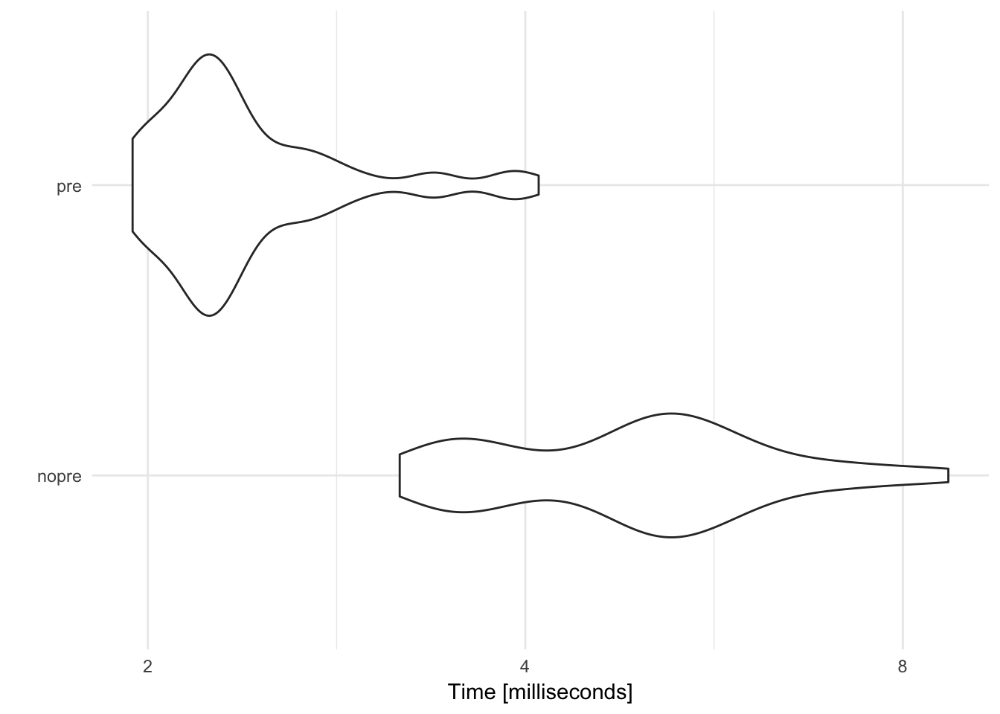

library(tidyverse)
set.seed(1234)
theme_set(theme_minimal())for loopsFunctions are one method of reducing duplication in your code. Another tool for reducing duplication is iteration, which lets you do the same thing to multiple inputs.
df <- tibble(
a = rnorm(10),
b = rnorm(10),
c = rnorm(10),
d = rnorm(10)
)Let’s say we want to compute the median for each column.
median(df$a)## [1] -0.5555419median(df$b)## [1] -0.4941011median(df$c)## [1] -0.4656169median(df$d)## [1] -0.605349Boo! We’ve copied-and-pasted median() three times. We don’t want to do that. Instead, we can use a for loop:
output <- vector(mode = "double", length = ncol(df))
for (i in seq_along(df)) {
output[[i]] <- median(df[[i]])
}
output## [1] -0.5555419 -0.4941011 -0.4656169 -0.6053490Let’s review the three components of every for loop.
output <- vector("double", length(x))
Before you start a loop, you need to create an empty vector to store the output of the loop. Preallocating space for your output is much more efficient than creating space as you move through the loop. The vector() function allows you to create an empty vector of any type. The first argument mode defines the type of vector (“logical”, “integer”, “double”, “character”, etc.) and the second argument length defines the length of the vector.
Numeric vectors are initialized to 0, logical vectors are initialized to FALSE, character vectors are initialized to "", and list elements to NULL.
vector(mode = "double", length = ncol(df))## [1] 0 0 0 0vector(mode = "logical", length = ncol(df))## [1] FALSE FALSE FALSE FALSEvector(mode = "character", length = ncol(df))## [1] "" "" "" ""vector(mode = "list", length = ncol(df))## [[1]]
## NULL
##
## [[2]]
## NULL
##
## [[3]]
## NULL
##
## [[4]]
## NULLi in seq_along(df)
This component determines what to loop over. During each iteration through the for loop, a new value will be assigned to i based on the the defined sequence. Here, the sequence is seq_along(df) which creates a numeric vector for a sequence of numbers beginning at 1 and continuing until it reaches the length of df (the length here is the number of columns in df).
seq_along(df)## [1] 1 2 3 4output[[i]] <- median(df[[i]])
This is the code that actually performs the desired calculations. It runs multiple times for every value of i. We use [[ notation to reference each column of df and store it in the appropriate element in output.
If you don’t preallocate space for the output, each time the for loop iterates, it makes a copy of the output and appends the new value at the end. Copying data takes time and memory. If the output is preallocated space, the loop simply fills in the slots with the correct values.
x <- rnorm(1000, mean = 0, sd = 1)
str(x)## num [1:1000] 1.449 -1.069 -0.855 -0.281 -0.994 ...# load microbenchmark library to time code
library(microbenchmark)
microbenchmark(
# don't preallocate
`No preallocation` = {
output <- vector("numeric", 0)
for (i in seq_along(x)) {
output <- c(output, x[[i]] + 1)
}
},
# preallocate
`Preallocation` = {
output <- vector("numeric", length(x))
for (i in seq_along(x)) {
output[[i]] <- x[[i]] + 1
}
}) %>%
autoplot +
scale_y_log10(breaks = c(2, 4, 8, 16, 32)) +
labs(y = "Time [milliseconds]")## Scale for 'y' is already present. Adding another scale for 'y', which
## will replace the existing scale.
Here, preallocating space for the vector cuts the computation time by a factor of 3.
for loopmtcarsWrite a for loop that calculates the arithmetic mean for every column in mtcars.
as_tibble(mtcars)## # A tibble: 32 x 11
## mpg cyl disp hp drat wt qsec vs am gear carb
## * <dbl> <dbl> <dbl> <dbl> <dbl> <dbl> <dbl> <dbl> <dbl> <dbl> <dbl>
## 1 21.0 6 160.0 110 3.90 2.620 16.46 0 1 4 4
## 2 21.0 6 160.0 110 3.90 2.875 17.02 0 1 4 4
## 3 22.8 4 108.0 93 3.85 2.320 18.61 1 1 4 1
## 4 21.4 6 258.0 110 3.08 3.215 19.44 1 0 3 1
## 5 18.7 8 360.0 175 3.15 3.440 17.02 0 0 3 2
## 6 18.1 6 225.0 105 2.76 3.460 20.22 1 0 3 1
## 7 14.3 8 360.0 245 3.21 3.570 15.84 0 0 3 4
## 8 24.4 4 146.7 62 3.69 3.190 20.00 1 0 4 2
## 9 22.8 4 140.8 95 3.92 3.150 22.90 1 0 4 2
## 10 19.2 6 167.6 123 3.92 3.440 18.30 1 0 4 4
## # ... with 22 more rowsBefore you write the for loop, identify the three components you need:
i in seq_along(mtcars)mean() of the \(i\)th column, store the new value as the \(i\)th element of the vector outputoutput <- vector("numeric", ncol(mtcars))
for(i in seq_along(mtcars)){
output[[i]] <- mean(mtcars[[i]], na.rm = TRUE)
}
output## [1] 20.090625 6.187500 230.721875 146.687500 3.596563 3.217250
## [7] 17.848750 0.437500 0.406250 3.687500 2.812500diamondsWrite a for loop that calculates the maximum value in each column of diamonds.
diamonds## # A tibble: 53,940 x 10
## carat cut color clarity depth table price x y z
## <dbl> <ord> <ord> <ord> <dbl> <dbl> <int> <dbl> <dbl> <dbl>
## 1 0.23 Ideal E SI2 61.5 55 326 3.95 3.98 2.43
## 2 0.21 Premium E SI1 59.8 61 326 3.89 3.84 2.31
## 3 0.23 Good E VS1 56.9 65 327 4.05 4.07 2.31
## 4 0.29 Premium I VS2 62.4 58 334 4.20 4.23 2.63
## 5 0.31 Good J SI2 63.3 58 335 4.34 4.35 2.75
## 6 0.24 Very Good J VVS2 62.8 57 336 3.94 3.96 2.48
## 7 0.24 Very Good I VVS1 62.3 57 336 3.95 3.98 2.47
## 8 0.26 Very Good H SI1 61.9 55 337 4.07 4.11 2.53
## 9 0.22 Fair E VS2 65.1 61 337 3.87 3.78 2.49
## 10 0.23 Very Good H VS1 59.4 61 338 4.00 4.05 2.39
## # ... with 53,930 more rowsBefore you write the for loop, identify the three components you need:
i in seq_along(diamonds)diamonds, store the new value as the \(i\)th element of the list outputoutput <- vector("numeric", ncol(diamonds))
for(i in seq_along(diamonds)){
output[i] <- max(diamonds[[i]])
}
output## [1] 5.01 5.00 7.00 8.00 79.00 95.00 18823.00
## [8] 10.74 58.90 31.80To preserve the name attributes from diamonds, use the names() function to extract the names of each column in diamonds and apply them as the names to the output vector:
# get the names of the columns in diamonds
names(diamonds)## [1] "carat" "cut" "color" "clarity" "depth" "table" "price"
## [8] "x" "y" "z"# assign the names of the diamonds columns to output
names(output) <- names(diamonds)
output## carat cut color clarity depth table price x
## 5.01 5.00 7.00 8.00 79.00 95.00 18823.00 10.74
## y z
## 58.90 31.80Notice that all the columns have a maximum value, even the apparently text-based columns. This is because
cut,color, andclarityare all stored as factor columns. Remember that factor vectors are built on top of integers, so the underlying values are numeric. As a result we can applymax()to a factor vector and still retrieve a (partially) meaningful result.
You will frequently need to iterate over vectors or data frames, perform an operation on each element, and save the results somewhere. for loops are not the devil. At first, they may seem more intuitive to use because you are explicitly identifying each component of the process. However the downside is that they focus on a lot of non-essential stuff. You have to track the value on which you are iterating, you need to explicitly create a vector to store the output, you have to assign the output of each iteration to the appropriate element in the output vector, etc.
tidyverse is all about focusing on verbs, not nouns. That is, focus on the operation being performed (e.g. mean(), median(), max()), not all the extra code needed to make the operation work. The purrr library provides a family of functions that mirrors for loops. They:
There is one function for each type of output:
map() makes a list.map_lgl() makes a logical vector.map_int() makes an integer vector.map_dbl() makes a double vector.map_chr() makes a character vector.map_dbl(df, mean)## a b c d
## -0.3831574 -0.1181707 -0.3879468 -0.7661931map_dbl(df, median)## a b c d
## -0.5555419 -0.4941011 -0.4656169 -0.6053490map_dbl(df, sd)## a b c d
## 0.9957875 1.0673376 0.6660013 0.8942458Just like all of our functions in the tidyverse, the first argument is always the data object, and the second argument is the function to be applied. Additional arguments for the function to be applied can be specified like this:
map_dbl(df, mean, na.rm = TRUE)## a b c d
## -0.3831574 -0.1181707 -0.3879468 -0.7661931Or data can be piped:
df %>%
map_dbl(mean, na.rm = TRUE)## a b c d
## -0.3831574 -0.1181707 -0.3879468 -0.7661931for loops using a map() functionmtcarsWrite a map() function that calculates the arithmetic mean for every column in mtcars.
as_tibble(mtcars)## # A tibble: 32 x 11
## mpg cyl disp hp drat wt qsec vs am gear carb
## * <dbl> <dbl> <dbl> <dbl> <dbl> <dbl> <dbl> <dbl> <dbl> <dbl> <dbl>
## 1 21.0 6 160.0 110 3.90 2.620 16.46 0 1 4 4
## 2 21.0 6 160.0 110 3.90 2.875 17.02 0 1 4 4
## 3 22.8 4 108.0 93 3.85 2.320 18.61 1 1 4 1
## 4 21.4 6 258.0 110 3.08 3.215 19.44 1 0 3 1
## 5 18.7 8 360.0 175 3.15 3.440 17.02 0 0 3 2
## 6 18.1 6 225.0 105 2.76 3.460 20.22 1 0 3 1
## 7 14.3 8 360.0 245 3.21 3.570 15.84 0 0 3 4
## 8 24.4 4 146.7 62 3.69 3.190 20.00 1 0 4 2
## 9 22.8 4 140.8 95 3.92 3.150 22.90 1 0 4 2
## 10 19.2 6 167.6 123 3.92 3.440 18.30 1 0 4 4
## # ... with 22 more rows
map_dbl(mtcars, mean)## mpg cyl disp hp drat wt
## 20.090625 6.187500 230.721875 146.687500 3.596563 3.217250
## qsec vs am gear carb
## 17.848750 0.437500 0.406250 3.687500 2.812500diamondsWrite a map() function that calculates the maximum value in each column of diamonds.
diamonds## # A tibble: 53,940 x 10
## carat cut color clarity depth table price x y z
## <dbl> <ord> <ord> <ord> <dbl> <dbl> <int> <dbl> <dbl> <dbl>
## 1 0.23 Ideal E SI2 61.5 55 326 3.95 3.98 2.43
## 2 0.21 Premium E SI1 59.8 61 326 3.89 3.84 2.31
## 3 0.23 Good E VS1 56.9 65 327 4.05 4.07 2.31
## 4 0.29 Premium I VS2 62.4 58 334 4.20 4.23 2.63
## 5 0.31 Good J SI2 63.3 58 335 4.34 4.35 2.75
## 6 0.24 Very Good J VVS2 62.8 57 336 3.94 3.96 2.48
## 7 0.24 Very Good I VVS1 62.3 57 336 3.95 3.98 2.47
## 8 0.26 Very Good H SI1 61.9 55 337 4.07 4.11 2.53
## 9 0.22 Fair E VS2 65.1 61 337 3.87 3.78 2.49
## 10 0.23 Very Good H VS1 59.4 61 338 4.00 4.05 2.39
## # ... with 53,930 more rows
map_dbl(diamonds, max)## carat cut color clarity depth table price x
## 5.01 5.00 7.00 8.00 79.00 95.00 18823.00 10.74
## y z
## 58.90 31.80Frequently when working with data frames you may wish to apply a specific function to multiple columns. For instance, calculating the average value of each column in mtcars. If we wanted to calculate the average of a single column, it would be pretty simple using just tidyverse functions:
mtcars %>%
summarize(mpg = mean(mpg))## mpg
## 1 20.09062If we want to calculate the mean for all of them, we’d have to duplicate this code many times over:
mtcars %>%
summarize(mpg = mean(mpg),
cyl = mean(cyl),
disp = mean(disp),
hp = mean(hp),
drat = mean(drat),
wt = mean(wt),
qsec = mean(qsec),
vs = mean(vs),
am = mean(am),
gear = mean(gear),
carb = mean(carb))## mpg cyl disp hp drat wt qsec vs
## 1 20.09062 6.1875 230.7219 146.6875 3.596563 3.21725 17.84875 0.4375
## am gear carb
## 1 0.40625 3.6875 2.8125But this is very repetitive and prone to mistakes - I cannot tell you how many typos I originally had in this code when I first wrote it. We’ve seen how to use loops and map() functions to solve this task - let’s check out one final method: scoped verbs.
Scoped verbs allow you to use standard verbs (or functions) in dplyr that affect multiple variables at once:
_if allows you to pick variables based on a predicate function like is.numeric() or is.character()_at allows you to pick variables using the same syntax as select()_all operates on all variablessummarize_all()summarize_all() takes a tibble and a function and applies that function to each column:
summarize_all(mtcars, mean)## mpg cyl disp hp drat wt qsec vs
## 1 20.09062 6.1875 230.7219 146.6875 3.596563 3.21725 17.84875 0.4375
## am gear carb
## 1 0.40625 3.6875 2.8125If you want to apply multiple summaries, use the funs() helper:
summarize_all(mtcars, funs(min, max))## mpg_min cyl_min disp_min hp_min drat_min wt_min qsec_min vs_min am_min
## 1 10.4 4 71.1 52 2.76 1.513 14.5 0 0
## gear_min carb_min mpg_max cyl_max disp_max hp_max drat_max wt_max
## 1 3 1 33.9 8 472 335 4.93 5.424
## qsec_max vs_max am_max gear_max carb_max
## 1 22.9 1 1 5 8And as always, you could combine this with group_by() to calculate group-level summary statistics:
mtcars %>%
group_by(gear) %>%
summarize_all(mean)## # A tibble: 3 x 11
## gear mpg cyl disp hp drat wt qsec
## <dbl> <dbl> <dbl> <dbl> <dbl> <dbl> <dbl> <dbl>
## 1 3 16.10667 7.466667 326.3000 176.1333 3.132667 3.892600 17.692
## 2 4 24.53333 4.666667 123.0167 89.5000 4.043333 2.616667 18.965
## 3 5 21.38000 6.000000 202.4800 195.6000 3.916000 2.632600 15.640
## # ... with 3 more variables: vs <dbl>, am <dbl>, carb <dbl>summarize_at()summarize_at() allows you to pick columns in the same way as select(), that is, based on their names. There is one small difference: you need to wrap the complete selection with the vars() helper (this avoids ambiguity).
summarize_at(mtcars, vars(-mpg), mean)## cyl disp hp drat wt qsec vs am gear
## 1 6.1875 230.7219 146.6875 3.596563 3.21725 17.84875 0.4375 0.40625 3.6875
## carb
## 1 2.8125By default, the newly created columns have the shortest names needed to uniquely identify the output.
summarize_at(mtcars, vars(mpg), funs(min, max))## min max
## 1 10.4 33.9summarize_at(mtcars, vars(mpg, wt), min)## mpg wt
## 1 10.4 1.513summarize_at(mtcars, vars(-mpg), funs(min, max))## cyl_min disp_min hp_min drat_min wt_min qsec_min vs_min am_min gear_min
## 1 4 71.1 52 2.76 1.513 14.5 0 0 3
## carb_min cyl_max disp_max hp_max drat_max wt_max qsec_max vs_max am_max
## 1 1 8 472 335 4.93 5.424 22.9 1 1
## gear_max carb_max
## 1 5 8summarize_if()summarize_at() allows you to pick variables to summarize based on their name, whereas summarize_if() allows you to pick variables to summarize based on some property of the column. Typically this is their type because you want to (e.g.) apply a numeric summary function only to numeric columns:
starwars## # A tibble: 87 x 13
## name height mass hair_color skin_color eye_color
## <chr> <int> <dbl> <chr> <chr> <chr>
## 1 Luke Skywalker 172 77 blond fair blue
## 2 C-3PO 167 75 <NA> gold yellow
## 3 R2-D2 96 32 <NA> white, blue red
## 4 Darth Vader 202 136 none white yellow
## 5 Leia Organa 150 49 brown light brown
## 6 Owen Lars 178 120 brown, grey light blue
## 7 Beru Whitesun lars 165 75 brown light blue
## 8 R5-D4 97 32 <NA> white, red red
## 9 Biggs Darklighter 183 84 black light brown
## 10 Obi-Wan Kenobi 182 77 auburn, white fair blue-gray
## # ... with 77 more rows, and 7 more variables: birth_year <dbl>,
## # gender <chr>, homeworld <chr>, species <chr>, films <list>,
## # vehicles <list>, starships <list>starwars %>%
group_by(species) %>%
summarize_if(is.numeric, mean, na.rm = TRUE)## # A tibble: 38 x 4
## species height mass birth_year
## <chr> <dbl> <dbl> <dbl>
## 1 Aleena 79.0000 15.00 NaN
## 2 Besalisk 198.0000 102.00 NaN
## 3 Cerean 198.0000 82.00 92.00000
## 4 Chagrian 196.0000 NaN NaN
## 5 Clawdite 168.0000 55.00 NaN
## 6 Droid 140.0000 69.75 53.33333
## 7 Dug 112.0000 40.00 NaN
## 8 Ewok 88.0000 20.00 8.00000
## 9 Geonosian 183.0000 80.00 NaN
## 10 Gungan 208.6667 74.00 52.00000
## # ... with 28 more rows(Note that na.rm = TRUE is passed on to mean() in the same way as in purrr::map().)
mutate_all(), mutate_if() and mutate_at() work in a similar way to their summarize equivalents.
mutate_all(mtcars, log10)## mpg cyl disp hp drat wt qsec vs
## 1 1.322219 0.7781513 2.204120 2.041393 0.5910646 0.4183013 1.216430 -Inf
## 2 1.322219 0.7781513 2.204120 2.041393 0.5910646 0.4586378 1.230960 -Inf
## 3 1.357935 0.6020600 2.033424 1.968483 0.5854607 0.3654880 1.269746 0
## 4 1.330414 0.7781513 2.411620 2.041393 0.4885507 0.5071810 1.288696 0
## 5 1.271842 0.9030900 2.556303 2.243038 0.4983106 0.5365584 1.230960 -Inf
## 6 1.257679 0.7781513 2.352183 2.021189 0.4409091 0.5390761 1.305781 0
## 7 1.155336 0.9030900 2.556303 2.389166 0.5065050 0.5526682 1.199755 -Inf
## 8 1.387390 0.6020600 2.166430 1.792392 0.5670264 0.5037907 1.301030 0
## 9 1.357935 0.6020600 2.148603 1.977724 0.5932861 0.4983106 1.359835 0
## 10 1.283301 0.7781513 2.224274 2.089905 0.5932861 0.5365584 1.262451 0
## 11 1.250420 0.7781513 2.224274 2.089905 0.5932861 0.5365584 1.276462 0
## 12 1.214844 0.9030900 2.440594 2.255273 0.4871384 0.6095944 1.240549 -Inf
## 13 1.238046 0.9030900 2.440594 2.255273 0.4871384 0.5717088 1.245513 -Inf
## 14 1.181844 0.9030900 2.440594 2.255273 0.4871384 0.5774918 1.255273 -Inf
## 15 1.017033 0.9030900 2.673942 2.311754 0.4668676 0.7201593 1.254790 -Inf
## 16 1.017033 0.9030900 2.662758 2.332438 0.4771213 0.7343197 1.250908 -Inf
## 17 1.167317 0.9030900 2.643453 2.361728 0.5092025 0.7279477 1.241048 -Inf
## 18 1.510545 0.6020600 1.895975 1.819544 0.6106602 0.3424227 1.289366 0
## 19 1.482874 0.6020600 1.879096 1.716003 0.6928469 0.2081725 1.267641 0
## 20 1.530200 0.6020600 1.851870 1.812913 0.6253125 0.2636361 1.298853 0
## 21 1.332438 0.6020600 2.079543 1.986772 0.5682017 0.3918169 1.301247 0
## 22 1.190332 0.9030900 2.502427 2.176091 0.4409091 0.5465427 1.227115 -Inf
## 23 1.181844 0.9030900 2.482874 2.176091 0.4983106 0.5359267 1.238046 -Inf
## 24 1.123852 0.9030900 2.544068 2.389166 0.5717088 0.5843312 1.187803 -Inf
## 25 1.283301 0.9030900 2.602060 2.243038 0.4885507 0.5848963 1.231724 -Inf
## 26 1.436163 0.6020600 1.897627 1.819544 0.6106602 0.2866810 1.276462 0
## 27 1.414973 0.6020600 2.080266 1.959041 0.6464037 0.3304138 1.222716 -Inf
## 28 1.482874 0.6020600 1.978181 2.053078 0.5763414 0.1798389 1.227887 0
## 29 1.198657 0.9030900 2.545307 2.421604 0.6253125 0.5010593 1.161368 -Inf
## 30 1.294466 0.7781513 2.161368 2.243038 0.5587086 0.4424798 1.190332 -Inf
## 31 1.176091 0.9030900 2.478566 2.525045 0.5490033 0.5526682 1.164353 -Inf
## 32 1.330414 0.6020600 2.082785 2.037426 0.6138418 0.4440448 1.269513 0
## am gear carb
## 1 0 0.6020600 0.6020600
## 2 0 0.6020600 0.6020600
## 3 0 0.6020600 0.0000000
## 4 -Inf 0.4771213 0.0000000
## 5 -Inf 0.4771213 0.3010300
## 6 -Inf 0.4771213 0.0000000
## 7 -Inf 0.4771213 0.6020600
## 8 -Inf 0.6020600 0.3010300
## 9 -Inf 0.6020600 0.3010300
## 10 -Inf 0.6020600 0.6020600
## 11 -Inf 0.6020600 0.6020600
## 12 -Inf 0.4771213 0.4771213
## 13 -Inf 0.4771213 0.4771213
## 14 -Inf 0.4771213 0.4771213
## 15 -Inf 0.4771213 0.6020600
## 16 -Inf 0.4771213 0.6020600
## 17 -Inf 0.4771213 0.6020600
## 18 0 0.6020600 0.0000000
## 19 0 0.6020600 0.3010300
## 20 0 0.6020600 0.0000000
## 21 -Inf 0.4771213 0.0000000
## 22 -Inf 0.4771213 0.3010300
## 23 -Inf 0.4771213 0.3010300
## 24 -Inf 0.4771213 0.6020600
## 25 -Inf 0.4771213 0.3010300
## 26 0 0.6020600 0.0000000
## 27 0 0.6989700 0.3010300
## 28 0 0.6989700 0.3010300
## 29 0 0.6989700 0.6020600
## 30 0 0.6989700 0.7781513
## 31 0 0.6989700 0.9030900
## 32 0 0.6020600 0.3010300filter_all() is the most useful of the three filter() variants. You use it conjunction with all_vars() or any_vars() depending on whether or not you want rows where all variables meet the criterion, or where just one variable meets it.
It’s particularly useful finding missing values:
library(nycflights13)
# Rows where any value is missing
filter_all(weather, any_vars(is.na(.)))## # A tibble: 3,109 x 15
## origin year month day hour temp dewp humid wind_dir wind_speed
## <chr> <dbl> <dbl> <int> <int> <dbl> <dbl> <dbl> <dbl> <dbl>
## 1 EWR 2013 1 1 17 39.20 28.40 64.93 270 16.11092
## 2 EWR 2013 1 1 18 39.20 28.40 64.93 330 14.96014
## 3 EWR 2013 1 3 16 30.92 14.00 49.01 NA 4.60312
## 4 EWR 2013 1 6 10 33.80 30.20 86.49 210 4.60312
## 5 EWR 2013 1 6 12 33.80 32.00 93.03 220 9.20624
## 6 EWR 2013 1 6 13 35.60 32.00 86.59 240 8.05546
## 7 EWR 2013 1 6 14 35.60 32.00 86.59 230 8.05546
## 8 EWR 2013 1 6 15 37.40 30.20 74.98 250 11.50780
## 9 EWR 2013 1 11 17 44.96 35.96 70.52 NA 4.60312
## 10 EWR 2013 1 11 21 46.40 39.20 75.84 90 4.60312
## # ... with 3,099 more rows, and 5 more variables: wind_gust <dbl>,
## # precip <dbl>, pressure <dbl>, visib <dbl>, time_hour <dttm># Rows where all wind variables are missing
filter_at(weather, vars(starts_with("wind")), all_vars(is.na(.)))## # A tibble: 3 x 15
## origin year month day hour temp dewp humid wind_dir wind_speed
## <chr> <dbl> <dbl> <int> <int> <dbl> <dbl> <dbl> <dbl> <dbl>
## 1 EWR 2013 3 27 21 51.98 19.04 27.02 NA NA
## 2 JFK 2013 7 4 10 73.04 71.06 93.52 NA NA
## 3 JFK 2013 7 20 10 80.96 71.06 71.92 NA NA
## # ... with 5 more variables: wind_gust <dbl>, precip <dbl>,
## # pressure <dbl>, visib <dbl>, time_hour <dttm>devtools::session_info()## Session info -------------------------------------------------------------## setting value
## version R version 3.4.1 (2017-06-30)
## system x86_64, darwin15.6.0
## ui X11
## language (EN)
## collate en_US.UTF-8
## tz America/Chicago
## date 2017-10-17## Packages -----------------------------------------------------------------## package * version date
## assertthat 0.2.0 2017-04-11
## backports 1.1.0 2017-05-22
## base * 3.4.1 2017-07-07
## bindr 0.1 2016-11-13
## bindrcpp * 0.2 2017-06-17
## boxes 0.0.0.9000 2017-07-19
## broom 0.4.2 2017-08-09
## cellranger 1.1.0 2016-07-27
## clisymbols 1.2.0 2017-05-21
## codetools 0.2-15 2016-10-05
## colorspace 1.3-2 2016-12-14
## compiler 3.4.1 2017-07-07
## crayon 1.3.4 2017-10-03
## datasets * 3.4.1 2017-07-07
## devtools 1.13.3 2017-08-02
## digest 0.6.12 2017-01-27
## dplyr * 0.7.4.9000 2017-10-03
## evaluate 0.10.1 2017-06-24
## forcats * 0.2.0 2017-01-23
## foreign 0.8-69 2017-06-22
## ggplot2 * 2.2.1 2016-12-30
## glue 1.1.1 2017-06-21
## graphics * 3.4.1 2017-07-07
## grDevices * 3.4.1 2017-07-07
## grid 3.4.1 2017-07-07
## gtable 0.2.0 2016-02-26
## haven 1.1.0 2017-07-09
## hms 0.3 2016-11-22
## htmltools 0.3.6 2017-04-28
## httr 1.3.1 2017-08-20
## jsonlite 1.5 2017-06-01
## knitr 1.17 2017-08-10
## lattice 0.20-35 2017-03-25
## lazyeval 0.2.0 2016-06-12
## lubridate 1.6.0 2016-09-13
## magrittr 1.5 2014-11-22
## memoise 1.1.0 2017-04-21
## methods * 3.4.1 2017-07-07
## microbenchmark * 1.4-2.1 2015-11-25
## mnormt 1.5-5 2016-10-15
## modelr 0.1.1 2017-08-10
## munsell 0.4.3 2016-02-13
## nlme 3.1-131 2017-02-06
## nycflights13 * 0.2.2 2017-01-27
## parallel 3.4.1 2017-07-07
## pkgconfig 2.0.1 2017-03-21
## plyr 1.8.4 2016-06-08
## psych 1.7.5 2017-05-03
## purrr * 0.2.3 2017-08-02
## R6 2.2.2 2017-06-17
## Rcpp 0.12.13 2017-09-28
## readr * 1.1.1 2017-05-16
## readxl 1.0.0 2017-04-18
## reshape2 1.4.2 2016-10-22
## rlang 0.1.2 2017-08-09
## rmarkdown 1.6 2017-06-15
## rprojroot 1.2 2017-01-16
## rstudioapi 0.6 2016-06-27
## rvest 0.3.2 2016-06-17
## scales 0.4.1 2016-11-09
## stats * 3.4.1 2017-07-07
## stringi 1.1.5 2017-04-07
## stringr * 1.2.0 2017-02-18
## tibble * 1.3.4 2017-08-22
## tidyr * 0.7.0 2017-08-16
## tidyverse * 1.1.1.9000 2017-07-19
## tools 3.4.1 2017-07-07
## utils * 3.4.1 2017-07-07
## withr 2.0.0 2017-07-28
## xml2 1.1.1 2017-01-24
## yaml 2.1.14 2016-11-12
## source
## CRAN (R 3.4.0)
## CRAN (R 3.4.0)
## local
## CRAN (R 3.4.0)
## CRAN (R 3.4.0)
## Github (r-pkgs/boxes@03098dc)
## local
## CRAN (R 3.4.0)
## cran (@1.2.0)
## CRAN (R 3.4.1)
## CRAN (R 3.4.0)
## local
## Github (gaborcsardi/crayon@b5221ab)
## local
## CRAN (R 3.4.1)
## CRAN (R 3.4.0)
## Github (tidyverse/dplyr@1a0730a)
## CRAN (R 3.4.1)
## CRAN (R 3.4.0)
## CRAN (R 3.4.1)
## CRAN (R 3.4.0)
## CRAN (R 3.4.1)
## local
## local
## local
## CRAN (R 3.4.0)
## CRAN (R 3.4.1)
## CRAN (R 3.4.0)
## CRAN (R 3.4.0)
## CRAN (R 3.4.1)
## CRAN (R 3.4.0)
## cran (@1.17)
## CRAN (R 3.4.1)
## CRAN (R 3.4.0)
## CRAN (R 3.4.0)
## CRAN (R 3.4.0)
## CRAN (R 3.4.0)
## local
## CRAN (R 3.4.0)
## CRAN (R 3.4.0)
## local
## CRAN (R 3.4.0)
## CRAN (R 3.4.1)
## CRAN (R 3.4.0)
## local
## CRAN (R 3.4.0)
## CRAN (R 3.4.0)
## CRAN (R 3.4.1)
## CRAN (R 3.4.1)
## CRAN (R 3.4.0)
## cran (@0.12.13)
## CRAN (R 3.4.0)
## CRAN (R 3.4.0)
## CRAN (R 3.4.0)
## CRAN (R 3.4.1)
## CRAN (R 3.4.0)
## CRAN (R 3.4.0)
## CRAN (R 3.4.0)
## CRAN (R 3.4.0)
## CRAN (R 3.4.0)
## local
## CRAN (R 3.4.0)
## CRAN (R 3.4.0)
## CRAN (R 3.4.1)
## CRAN (R 3.4.1)
## Github (tidyverse/tidyverse@a028619)
## local
## local
## CRAN (R 3.4.1)
## CRAN (R 3.4.0)
## CRAN (R 3.4.0)This work is licensed under the CC BY-NC 4.0 Creative Commons License.